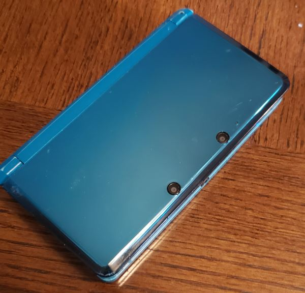

last day25.jun.24 
it is soon to be my last day here in AZ. it feels kind of bittersweet to be leaving again.
when i got to AZ, my to-do list looked pretty simple:
- give mizu kisses
- hack my 3ds
- visit old coworkers
- play guitar hero on my wii u
- receive packages from CDjapan
- take a look at my old stuff that i left behind
out of all of these, i wasn't able to do the guitar hero one... sadly my mom gave away my guitar controller for some reason...  but i forgive her. still. i really wanted to play guitar hero again. and it's so sad i don't have that guitar controller anymore because it was from like... 2009 probably. it was mega old. i hope whoever has it right now is taking good care on my controller.
but i forgive her. still. i really wanted to play guitar hero again. and it's so sad i don't have that guitar controller anymore because it was from like... 2009 probably. it was mega old. i hope whoever has it right now is taking good care on my controller.
.jpg "playing minesweeper on my poor wii u") at least the rest of my wii u was intact for some reason. the only thing i used that thing was to use the virtual wii to play guitar hero so i went ahead and tried to hack it (just like i did with my 3DS) and it worked!
at least the rest of my wii u was intact for some reason. the only thing i used that thing was to use the virtual wii to play guitar hero so i went ahead and tried to hack it (just like i did with my 3DS) and it worked!
it was a bit more of a hassle compared to the 3DS but i managed it to work at the end of the day. there's a lot of stuff they don't tell you on purpose so nintendo doesn't nuke their site. i made a lot of google searches this day.
i had thought hacking the wii u would also hack the virtual wii but apparently that is a whole other thing! another hour later i was able to get my hacked virtual wii up and running with some roms i've always wanted to play like my sims.
so cutieful
i also hope to play super mario galaxy eventually! i played it for a little bit last year on my girlfriend's switch and it was so much fun and whimsical...
 oh and talking about nintendo consoles, i also cleaned my 3DS or as i like to call it: the beast. as seen in an earlier log post this month, this 3DS was bedazzled to the BRIM. sadly the gems kept falling off as i used it and carry it with me everywhere. because of that my hands kept getting sticky from the glue residue that it left so i said OKAY that's it i'm taking all of shit off of you.
it's a bit sad though because i did find it so charming! but it was a bit annoying to deal with. after 30 mins and a bottle of rubbing alcohol i was able to take it all off. jesus. this was hard work. if you get wood stained with rubbing alcohol all you need is coconut oil btw. i plan on putting some stickers i have at my home once i get there so it can still have some personality to it!
while in AZ, i also went on some pretty neat adventures!
i visited a ghost town called jerome. the place was really nice and cool. it was all in like a hill. apparently a long time ago, there was a landslide that killed a lot of the people that lived there. some of them survived and were taken to the hospital but the hospital then caught on fire... at least that's what my mom told me. said hospital is now a hotel and restaurant  went there with a good friend of mine who was also my coworker when i worked here!
went there with a good friend of mine who was also my coworker when i worked here!
.jpg)
the view from the town.
.jpg)
skeletons from a place called haunted hamburger. they made me giggle. also the hamburger was pretty good too.
.jpg)
i got a little glass piggy as a souvenir. i called him jerome because of the town. and because couldn't think of a better name. i think he's very cute. my sweet boy. he is 1 inch tall. and wide.
.jpg)
.jpg)
.jpg)
on another day, my mom saw an ad for this obsticle course in a lake and we managed to get some tickets the very same day! it was sooooo much fun oh my god. i had a stupid smile on my face the entire time because of how fun it was.
the next day i had my arms and shoulders sore because of the many times i fell and had to climb into the course again.
recently i visited another old coworker of mine (my other friend who went with me to the ghost town the trauma bonding you get from working in retail is so real was also there) and we baked AND ATE some pies!!! i swear she makes the best pies in the world... especially the apple pies. so yummy and good and delicious. i've been eating pie for the past 3 days.
but besides that we also just spent hours talking and catching up with each other and it was very nice. when i was in AZ my only friends were basically my coworkers, so i'm glad i got to spend some time with them again.
the clothes is way cheaper here than in PR so i've gotten some new clothes as well. i've also been going to goodwill a lot because i find that place so interesting. i went ahead got some pieces i was missing for my halloween outfit this year. because oh my god. a blazer for just $6... but you will have to wait til halloween to find out what it is! i won't spoil it! but i am very excited for it :3 i haven't dressed up for something in a good while.
 after spending a whole month with him, i will def miss my dear mizu the most...
after spending a whole month with him, i will def miss my dear mizu the most...  this will probably be the last time i see him too... he's an old boy! about to be 14 years old this october. and yet he is still my baby. he loves it when i grab him like a baby and give him kisses on his forehead. truly the most perfect cat in the world. i will miss him a ton when i go back to PR.
this will probably be the last time i see him too... he's an old boy! about to be 14 years old this october. and yet he is still my baby. he loves it when i grab him like a baby and give him kisses on his forehead. truly the most perfect cat in the world. i will miss him a ton when i go back to PR.
and of course, i also missed hanging out with my mom's ugly lovingly pug: toby. he's pretty chill. he's old too. he loves being with people and sleep. those are his two only hobbies.
overall, i've mostly just been chilling with my mom here. our relationship was not the best over the last couple of years but it was gotten way better yay! i also think my grandma passing away made us be even closer now because we both used to talk to her a lot, but now we only have each other. she's currently in her knitting phase to she made me a blanket, it is super soft and i love the colors.
i will miss this place, but i also miss puerto rico. i miss not feeling like i'm inside an air fryer when i go outside. and i miss my lovely boyfriend! i really can't wait to see him once i get back.
bittersweet
apple pie
guilt16.jun.24
being here in AZ for my visit has been such a massive throwback to me. i really miss a lot of the things here. my cat. the pothole-less roads. having stable electricity and water in my home 24/7.
i remember when i moved back to PR after spending 3 years in AZ, it was really hard to adjust. like very. i feel like life is a little bit more tolerable here. or at least, it pisses me off less than being in PR.
this type of thinking makes me feel very guilty at the end of the day. i know both of these places have their ups and downs. i know Puerto Rico has been through a lot. i know the state that PR is in is from the consequences of it being a colony of the United States. and yet i can't help myself but wish i could live here instead, in AZ, in the United States. how ironic, isn't it?
i want to believe my thought process makes sense. i mean, yeah, of course it makes sense. after all, the citizenship we puertoricans have is the US one. where else would i go? and yet my heart gets heavy when i think about it. feeling like the only choice you have is the country that actively puts your home country at a disadvantage with its laws.
Puerto Rico has a lot of charm to it. it has a lot of people that i love and care about. my beautiful beaches. my sweet plantains. i feel bad because it makes me feel like i'm giving up on my home for the sake of convenience. i'm giving up without even fighting back. i feel guilty because if i give up, i am letting the people in power that don't do anything good for Puerto Rico win. i am aware that i have to use my voice and be with my people in union if i, if we, want to see change happen. i am very aware.
but sadly, it is just frustrating to see Puerto Rico like this and not seeing any change happening. i really want to see it change. and i hope to be part of that change someday.
visiting AZ + 3DS04.jun.24
i flew to AZ recently and will be staying here for a while! i've been SO excited to be here. specially because i would get to see my cat once again in 3 years!!! i have missed him so much :3 my meow meow. expect lots of new pictures on his shrine! there's a lot of other reasons why i was very excited for visiting here again. i had left a bunch of my belongings here when i moved. books, letters, clothes, consoles, games, etc.
so while looking around my stuff, i found my 3DS! oh man i how i missed this thing. i absolutely forgot i had it bedazzled like this so when i found it i kind of jumped at the sight of it. i don't find it ugly to be fair, i simply just forgor 
when i opened it that wave of nostalgia hit me HARD. i am pretty sure i got the 3DS just a few months after it's launch so this thing has been with me for a while. surprisingly enough, the only 3DS game i ever got my hands on was nintendogs + cats. yes. this was the only 3DS game i ever owned for a good decade. and that was good enough for little old me. though i did also have a bunch of DS games, but at some point i sold all of those away and i wish i didn't. the only game cartrige that i didn't sell is sonic rush because I WANT to beat that game eventually. i grew up with that game and i got pretty far with it but i think i was too "baby" to beat some levels and bosses  i could only get so far... but i think if i give it a shot nowadays i should be able to finish it
i could only get so far... but i think if i give it a shot nowadays i should be able to finish it 
but anyway... over the past year or so i've been aware that it is actually quite easy to hack your 3DS thanks to sites like 3ds.hacks.guide where it guides you step by step through the process. as soon as i got my hands on my 3DS again, i started doing all of this so i could experience more games that aren't nintendogs + cats. let me tell you i've been having a BLAST with this thing!
i love the customizability that modding your 3DS brings to the table. i've installed a few themes but these ones are my favorites so far:
they look so cute!
.jpg "my in-game avatar") i've installed a bunch of games to play eventually. as of right now, i am HOOKED with style savvy trendsetters. i wanted to play this game so badly when i was little. i would play the demo many times til my tries would expire. and with the release of fashion dreamer i wanted to try the style savvy games even more. at last, i was finally able to play it! i've been having so much fun with it! i can't wait to try all the other games style savvy games too. though that will have to wait some time. i'll making new pages for the games i play on my gaming log some time!
i've installed a bunch of games to play eventually. as of right now, i am HOOKED with style savvy trendsetters. i wanted to play this game so badly when i was little. i would play the demo many times til my tries would expire. and with the release of fashion dreamer i wanted to try the style savvy games even more. at last, i was finally able to play it! i've been having so much fun with it! i can't wait to try all the other games style savvy games too. though that will have to wait some time. i'll making new pages for the games i play on my gaming log some time!
besides reuniting with mizu and my 3DS, i also found some other things that i missed dearly! one of them being my our dreams at dusk / shimanami tasogare manga.
i really recommend it to anyone who likes coming of age stories. i am personally a huge fan of them... i'm super excited to give it a re-read this month. WHICH IS PRIDE MONTH! so fitting. happy pride month to the gay and trans people on my computer :3 love yall 
i've been in AZ for just a couple of days so i haven't done much! but i did go camping and uploaded some pics i took over there to my photobook. for my birthday i went to an asian buffet i used to go a ton when i lived here. it was so delicious!!!! 
and this is just one plate of food i got....
and thank you to everyone who wished me a happy birthday! i really appreciate it.
in other news...

i am almost done with the siinamota fanlisting! everything is pretty much done but i'd like to make some more buttons and tweak the CSS a bit more before officially finishing it. it was approved by the fanlistings network so that is pretty exciting as well! if you're reading this and would like to join the siinamota fanlisting, you can go ahead and fill out the join form! but i will be making a proper announcement once i am done with it :3
gotta update some pages on my site here and there but i don't have anything big planned so far for this summer! i'm just chilling ^_^
my cat's water fountain
hungry! gonna do breakfast soon
style savvy trendsetters